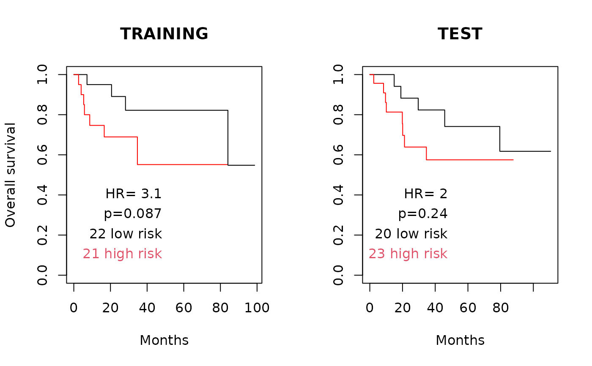

opt1D.RdThis function is a wrapper to the optL1 and optL2 functions of the penalized R package, useful for parallelized repeated tuning of the penalty parameters.
opt1D(nsim = 50, nprocessors = 1, setpen = "L1", cl = NULL, ...)Number of times to repeat the simulation (around 50 is suggested)
An integer number of processors to use.
Either "L1" (Lasso) or "L2" (Ridge) penalty
Optional cluster object created with the makeCluster() function of the parallel package. If this is not set, pensim calls makeCluster(nprocessors, type="SOCK"). Setting this parameter can enable parallelization in more diverse scenarios than multi-core desktops; see the documentation for the parallel package. Note that if cl is user-defined, this function will not automatically run parallel::stopCluster() to shut down the cluster.
arguments passed on to optL1 or optL2 function of the penalized R package
This function sets up a SNOW (Simple Network of Workstations) "sock" cluster to parallelize the task of repeated tunings the L1 or L2 penalty parameter. Tuning of the penalty parameters is done by the optL1 or optL2 functions of the penalized R package.
Returns a matrix with the following columns:
optimized value of the penalty parameter
optimized cross-validated likelihood
argmax coefficients for the model with this value of the tuning parameter
The matrix contains one row for each repeat of the regression.
Waldron L, Pintilie M, Tsao M-S, Shepherd FA, Huttenhower C*, Jurisica I*: Optimized application of penalized regression methods to diverse genomic data. Bioinformatics 2011, 27:3399-3406. (*equal contribution)
Depends on the R packages: penalized, parallel, rlecuyer
optL1, optL2
data(beer.exprs)
data(beer.survival)
##select just 100 genes to speed computation:
set.seed(1)
beer.exprs.sample <- beer.exprs[sample(1:nrow(beer.exprs), 100),]
gene.quant <- apply(beer.exprs.sample, 1, quantile, probs = 0.75)
dat.filt <- beer.exprs.sample[gene.quant > log2(100),]
gene.iqr <- apply(dat.filt, 1, IQR)
dat.filt <- as.matrix(dat.filt[gene.iqr > 0.5,])
dat.filt <- t(dat.filt)
##define training and test sets
set.seed(1)
trainingset <- sample(rownames(dat.filt), round(nrow(dat.filt) / 2))
testset <-
rownames(dat.filt)[!rownames(dat.filt) %in% trainingset]
dat.training <- data.frame(dat.filt[trainingset, ])
pheno.training <- beer.survival[trainingset, ]
library(survival)
surv.training <- Surv(pheno.training$os, pheno.training$status)
dat.test <- data.frame(dat.filt[testset, ])
all.equal(colnames(dat.training), colnames(dat.test))
#> [1] TRUE
pheno.test <- beer.survival[testset, ]
surv.test <- Surv(pheno.test$os, pheno.test$status)
##ideally nsim should be on the order of 50, but this slows computation
##50x without parallelization.
set.seed(1)
output <-
pensim::opt1D(
nsim = 1,
nprocessors = 1,
setpen = "L2",
response = surv.training,
penalized = dat.training,
fold = 3,
positive = FALSE,
standardize = TRUE,
minlambda2 = 1,
maxlambda2 = 100
)
#> lambda= 100 123cvl= -43.98462
#> lambda= 38.81464 123cvl= -44.60101
#> lambda= 62.18536 123cvl= -44.23014
#> lambda= 76.62927 123cvl= -44.10918
#> lambda= 90.53497 123cvl= -44.02766
#> lambda= 85.22346 123cvl= -44.0558
#> lambda= 94.15029 123cvl= -44.01025
#> lambda= 96.38468 123cvl= -44.00011
#> lambda= 97.76561 123cvl= -43.99406
#> lambda= 98.61907 123cvl= -43.99041
#> lambda= 99.14654 123cvl= -43.98818
#> lambda= 99.47253 123cvl= -43.98681
#> lambda= 99.67401 123cvl= -43.98597
#> lambda= 99.79853 123cvl= -43.98546
#> lambda= 99.87548 123cvl= -43.98514
#> lambda= 99.92304 123cvl= -43.98494
#> lambda= 99.95244 123cvl= -43.98482
#> lambda= 99.97061 123cvl= -43.98474
#> lambda= 99.98183 123cvl= -43.9847
cc <- output[which.max(output[, "cvl"]),-(1:2)] #coefficients
sum(abs(cc) > 0) #count non-zero coefficients
#> [1] 14
preds.training <- as.matrix(dat.training) %*% cc
preds.training.median <- median(preds.training)
preds.training.dichot <-
ifelse(preds.training > preds.training.median, "high risk", "low risk")
preds.training.dichot <-
factor(preds.training.dichot[, 1], levels = c("low risk", "high risk"))
preds.test <- as.matrix(dat.test) %*% cc
preds.test.dichot <-
ifelse(preds.test > preds.training.median, "high risk", "low risk")
preds.test.dichot <-
factor(preds.test.dichot[, 1], levels = c("low risk", "high risk"))
coxphfit.training <- coxph(surv.training ~ preds.training.dichot)
survfit.training <- survfit(surv.training ~ preds.training.dichot)
summary(coxphfit.training)
#> Call:
#> coxph(formula = surv.training ~ preds.training.dichot)
#>
#> n= 43, number of events= 11
#>
#> coef exp(coef) se(coef) z Pr(>|z|)
#> preds.training.dichothigh risk 1.1280 3.0895 0.6931 1.628 0.104
#>
#> exp(coef) exp(-coef) lower .95 upper .95
#> preds.training.dichothigh risk 3.089 0.3237 0.7942 12.02
#>
#> Concordance= 0.65 (se = 0.068 )
#> Likelihood ratio test= 2.94 on 1 df, p=0.09
#> Wald test = 2.65 on 1 df, p=0.1
#> Score (logrank) test = 2.93 on 1 df, p=0.09
#>
coxphfit.test <- coxph(surv.test ~ preds.test.dichot)
survfit.test <- survfit(surv.test ~ preds.test.dichot)
summary(coxphfit.test)
#> Call:
#> coxph(formula = surv.test ~ preds.test.dichot)
#>
#> n= 43, number of events= 13
#>
#> coef exp(coef) se(coef) z Pr(>|z|)
#> preds.test.dichothigh risk 0.6720 1.9582 0.5765 1.166 0.244
#>
#> exp(coef) exp(-coef) lower .95 upper .95
#> preds.test.dichothigh risk 1.958 0.5107 0.6326 6.061
#>
#> Concordance= 0.618 (se = 0.063 )
#> Likelihood ratio test= 1.41 on 1 df, p=0.2
#> Wald test = 1.36 on 1 df, p=0.2
#> Score (logrank) test = 1.41 on 1 df, p=0.2
#>
(p.training <-
signif(summary(coxphfit.training)$logtest[3], 2)) #likelihood ratio test
#> pvalue
#> 0.087
(hr.training <- signif(summary(coxphfit.training)$conf.int[1], 2))
#> [1] 3.1
(hr.lower.training <- summary(coxphfit.training)$conf.int[3])
#> [1] 0.7942331
(hr.upper.training <- summary(coxphfit.training)$conf.int[4])
#> [1] 12.01763
par(mfrow = c(1, 2))
plot(
survfit.training,
col = c("black", "red"),
conf.int = FALSE,
xlab = "Months",
main = "TRAINING",
ylab = "Overall survival"
)
xmax <- par("usr")[2] - 50
text(
x = xmax,
y = 0.4,
lab = paste("HR=", hr.training),
pos = 2
)
text(
x = xmax,
y = 0.3,
lab = paste("p=", p.training, "", sep = ""),
pos = 2
)
tmp <- summary(preds.training.dichot)
text(
x = c(xmax, xmax),
y = c(0.2, 0.1),
lab = paste(tmp, names(tmp)),
col = 1:2,
pos = 2
)
(p.test <-
signif(summary(coxphfit.test)$logtest[3], 2)) #likelihood ratio test
#> pvalue
#> 0.24
(hr.test <- signif(summary(coxphfit.test)$conf.int[1], 2))
#> [1] 2
(hr.lower.test <- summary(coxphfit.test)$conf.int[3])
#> [1] 0.6326482
(hr.upper.test <- summary(coxphfit.test)$conf.int[4])
#> [1] 6.061171
plot(
survfit.test,
col = c("black", "red"),
conf.int = FALSE,
xlab = "Months",
main = "TEST"
)
text(
x = xmax,
y = 0.4,
lab = paste("HR=", hr.test),
pos = 2
)
text(
x = xmax,
y = 0.3,
lab = paste("p=", p.test, "", sep = ""),
pos = 2
)
tmp <- summary(preds.test.dichot)
text(
x = c(xmax, xmax),
y = c(0.2, 0.1),
lab = paste(tmp, names(tmp)),
col = 1:2,
pos = 2
)
